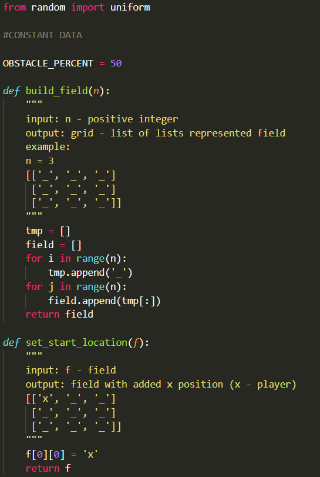
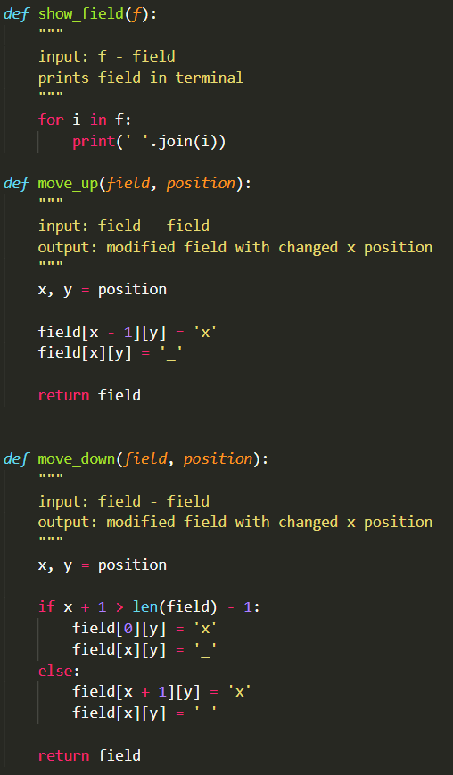
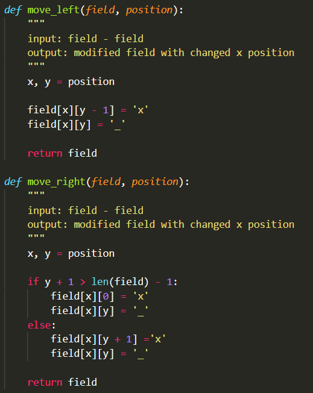
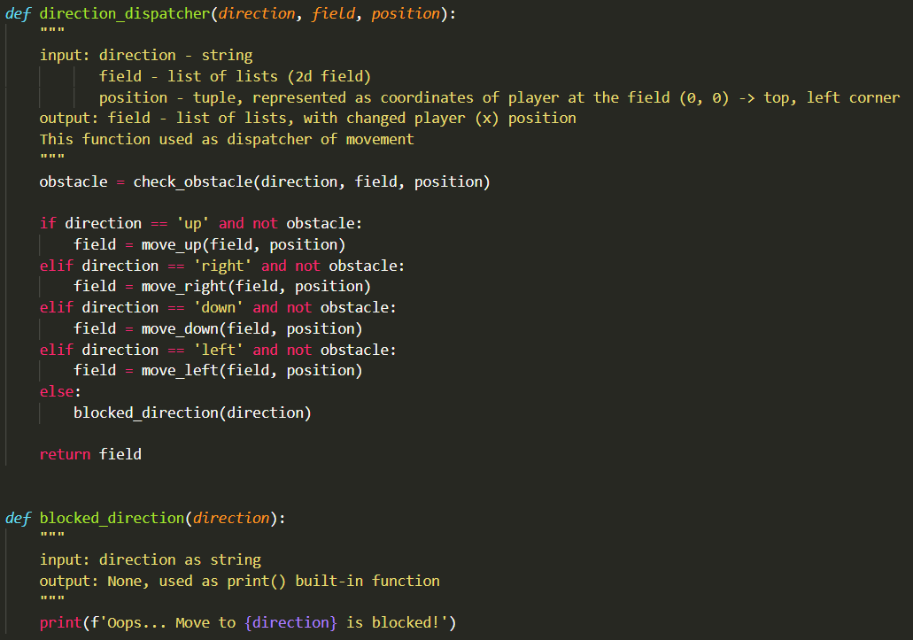
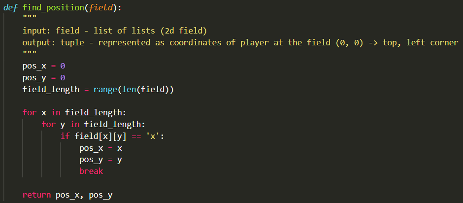
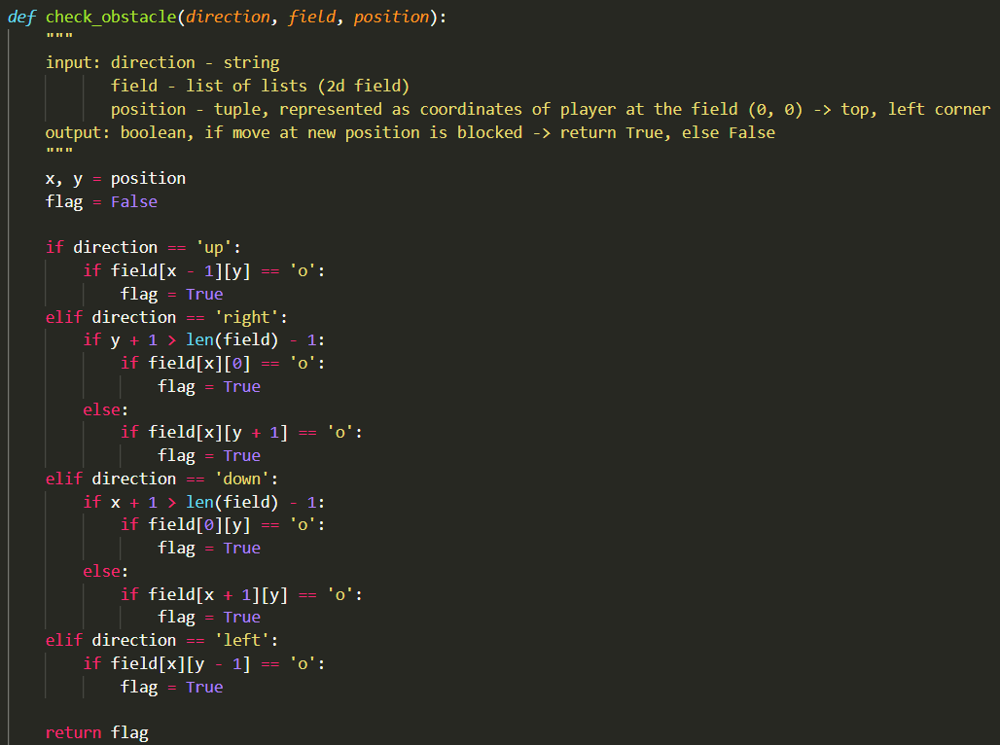
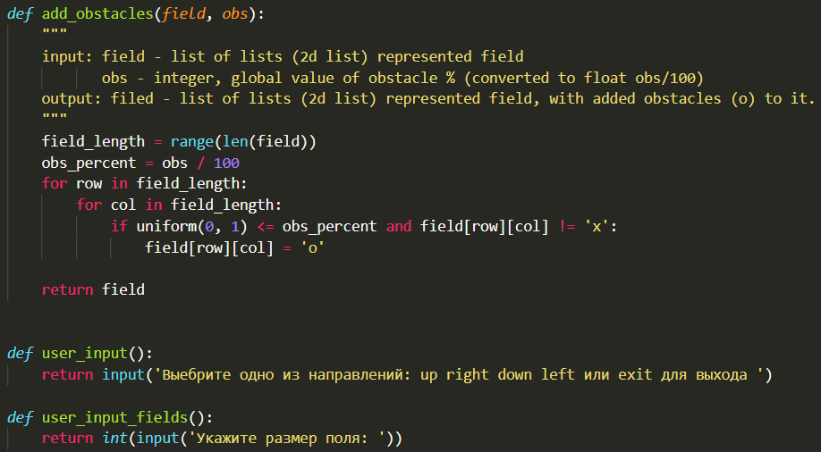
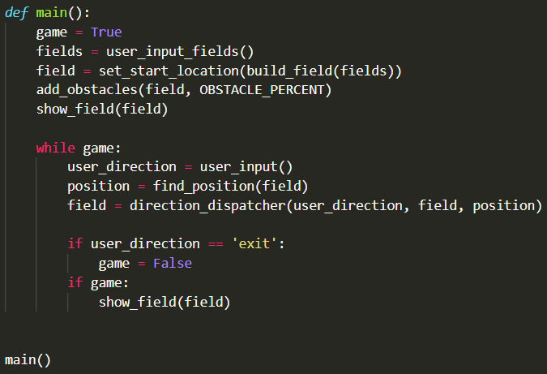

1
Препятствия на поле
сложно
Добавь препятствия o в игру с перемещением по двумерному полю (задание 4 из урока 8). Через препятствие пройти нельзя.
Подсказка
Случайно расставить препятствия поможет from random import uniform или randint.
Показать ответ (сначала попробуй сам!)







